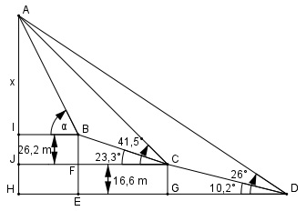

Aufgabe 207 Um wie viel m liegt der Punkt A im Gelände höher als der Punkt B und unter welchem Höhenwinkel α ist er von B aus zu sehen? Die Punkte A, B, C und D liegen in einer Vertikalebene. C und D sind deswegen zur Peilung gewählt worden, weil A von B aus nicht einsehbar ist.

Im Dreieck CGD: (rechter Winkel bei D) 16,6 m tan 10,2° = -------- |*GD GD GD * tan 10,2° = 16,6 m | :tan 10,2° 16,6 m 16,6 m GD = ---------- = --------- = 92,2 m tan 10,2° 0,18 Im Dreieck BFC: (rechter Winkel bei F) 26,2 m tan 23,3° = --------- |*FC FC FC * tan 23,3° = 26,2 m |:tan 23,3° 26,2 m 26,2 m FC = ----------- = ---------- = 60,8 m = EG tan 23,3° 0,4307 Im Dreieck AHD: (rechter Winkel bei H) x + 26,2 m + 16,6 m tan 26° = ---------------------- BI + EG + GD x + 42,8 m 0,4877 = ----------------------- = BI + 60,8 m + 92,2 m x + 42,8 m = ------------- |*(BI + 153 m) BI + 153 m (BI + 153 m) * 0,4877 = x + 42,8 m |-42,8 m x = (BI + 153 m) * 0,4877 – 42,8 m Im Dreieck AJC: (rechter Winkel bei J): x + 26,2 m tan 41,5° = ------------- = BI + EG x + 26,2 m = ------------- |*(BI + 60,8 m) BI + 60,8 m (BI + 60,8 m) * 0,8847 = x + 26,2 m |-26,2 m x = (BI + 60,8 m) * 0,8847 - 26,2 m Gleichgesetzt: (BI + 153 m) * 0,4877 – 42,8 m = = (BI + 60,8 m) * 0,8847 - 26,2 m BI * 0,4877 + 153 m * 0,4877 – 42,8 = = BI * 0,8847 + 60,8 m * 0,8847 – 26,2 m BI * 0,4877 + 74,6 m – 42,8 m = = BI * 0,8847 + 53,8 m – 26,2 m BI * 0,4877 + 31,8 m = = BI * 0,8847 + 27,6 m| -BI * 0,4877 31,8 m = BI * (0,8847 – 0,4877) + 27,6 m |-27,6 m 4,2 m = BI * 0,397 | :0,397 BI = 10,6 m Eingesetzt: x = (BI + 60,8 m) * 0,8847 - 26,2 m x = (10,6 m + 60,8 m) * 0,8847 – 26,2 m x = 37 m Im Dreieck AIB: (rechter Winkel bei I) x 37 m tan α = ---- = -------- = 3,4906 --> α = 74° BI 10,6 m